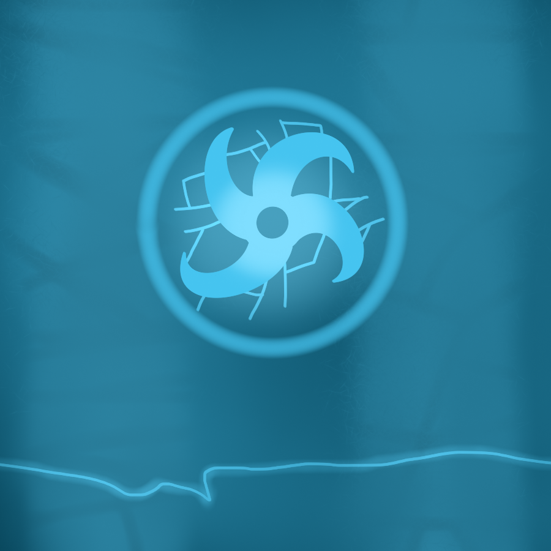

One of the many representations for Morna
Morna is a far stretching power that I came up with back at my high school days and continued to exist in most of my past projects times later. It originated from an RTS game idea of mine that started out as a Battle Realms clone and apparently meant something about waking up in Swedish. (Morna was a random word I came up with)
Morna is (As I consider it) future magic. It's usable by any smart creature that wields it and can be used to bend reality and conjure up elements. The ones wielding the power is called Mornalists. The morna itself is scattered all over the universe which names it a "Mornaverse". Altho everywhere, there's one place where there's the most energy. The original area from where the power came from called the Morna Core. The Core generates new Morna rapidly and never stops. The Morna generated is called Morni (Positive) and Murno (Negative).
W.I.P
In order to perform Mornalistic abilities, one has to be born with it or find a large amount of absorbable energy in something like a Power Well or another Mornalist that is enough powerful to sacrifice some of it's own without losing too much. Mornalists can slightly alter reality, heal and destroy what they want and spawn creations from another realm or even create their own.
I made some Mornalist types that's worth mentioning. Like
Glyphlings
Spinxer